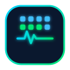

自习室监控中心
已刷新
0
次 · 运行
00:00:00
● 在线
--:--:--
⚠
监控教室
--
实时在线
当前总人数
--
检测头数合计
占用座位
--
--
总占用率
--
全教室汇总
今日会话
--
当前教室
人均在座
--
当前教室 · 今日
各教室实时状态
（点击查看详情）
加载中...
教室详情
在座人数
--
跟踪确认后的人数
空余座位
--
-- / -- 座
占用率
--
人数 / 总座位
座位实时分布
占用
空闲
全局实时人流
（每 5 秒滚动）
总占用率仪表
教室占用率排行
（实时重排）
今日分时热度